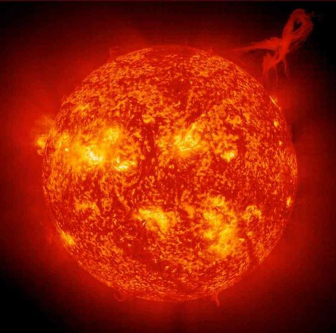
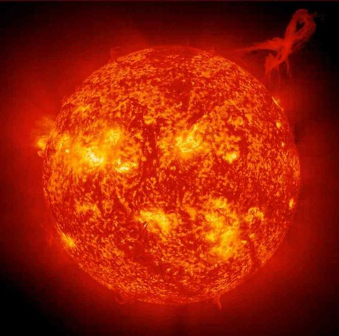

O espaço
o que é o espaço
- O espaço é o vasto e aparentemente vazio trecho do cosmos que se estende além da atmosfera da Terra.
- Ele é onde os corpos celestes, como estrelas,planetas , cometas e galáxias, existem e interagem.
- O universo começou com o Big Bang há cerca de 13,8 bilhões de anos.
Coisas que acontecem no espaço
- Explosões de estrelas massivas no final de suas vidas.
- Supernovas liberam energia equivalente a bilhões de sóis e criam elementos pesados, como ouro e platina.
- Regiões do espaço onde a gravidade é tão intensa que nada, nem mesmo a luz, pode escapar.
 
